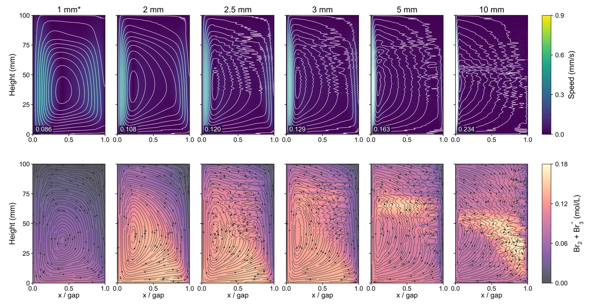

Grid energy storage
Flowless zinc–bromine batteries
A coupled cell model reveals how natural convection and cell geometry shape where bromine is stored and consumed.
Mechanical engineering
Electrochemical systems and transport
I’m Jackie, an M.S. researcher at Carnegie Mellon University. I use multiphysics modeling and experiments to study how water, heat, and dissolved species move through batteries and electrolyzers.

Grid energy storage
A coupled cell model reveals how natural convection and cell geometry shape where bromine is stored and consumed.

Hydrogen production
A water purification membrane feeds an electrolyzer through a gas loop. I used measurements and modeling to size the membrane and explain voltage losses.
Multiphase CFD
I built a 3D simulation workflow to compare water and gas transport in a circular cell that alternates between producing and consuming hydrogen.
Industrial heat recovery
A rotating liquid-metal heat exchanger concept routes steelmaking waste heat to a two-loop power generation system.
Thermal management
My undergraduate thesis compared phase change materials and thermoelectric modules for temperature control and energy recovery.
Industry experience
At Ningbo Deye, I ran pack safety tests and checked battery management hardware and software.
I work with Professor Shawn Litster in the Electrochemical Decarbonization Laboratory. I’m interested in what happens inside a device when a measured voltage or efficiency changes. For example, I use models to locate membrane dehydration or bromine depletion and compare the predictions with measurements.
My training in energy storage at Xi’an Jiaotong University also took me into chip cooling and industrial heat recovery. I bring that background in heat and mass transfer to my current work on electrochemical devices.
Education, technical skills, research, and battery test experience in a one-page PDF.